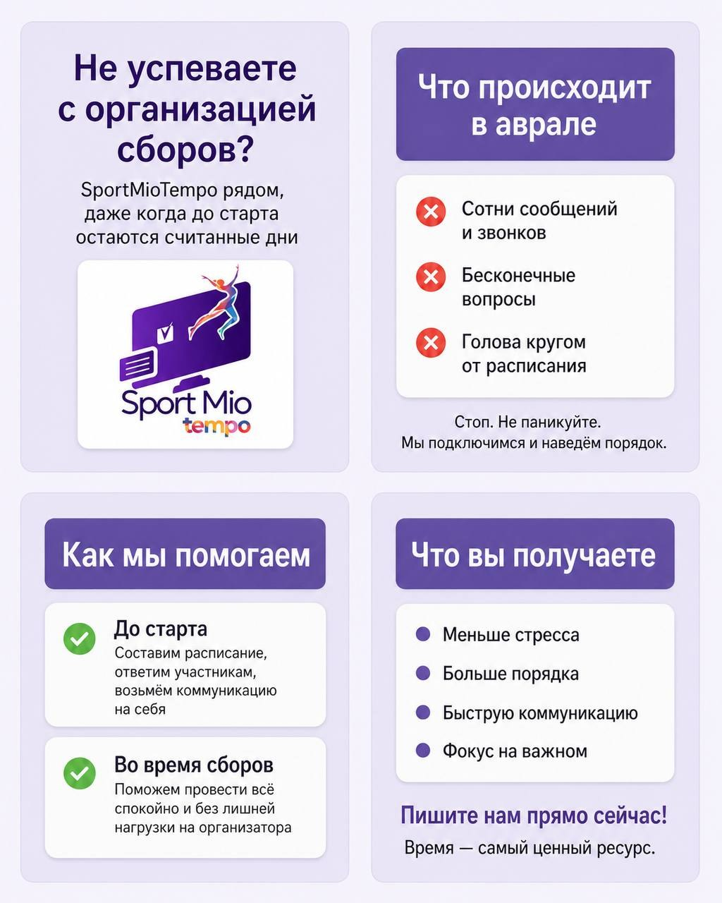

01
Текстовая карусель: «В чём наше отличие?»
Задача — упаковать позиционирование SportMioTempo в серию лаконичных карточек: комплексный подход, расписание, поддержка и единая платформа.


Москва · digital-дизайн · соцсети
Digital-дизайнер / дизайнер соцсетей. Превращаю тексты, интерфейсные скриншоты и сырые задачи в понятные визуалы для соцсетей.

Обо мне
Я работаю с digital-контентом: постами, каруселями, сторис, UI-разборами и визуалами для Telegram. Часто задача начинается с текста, скриншота или комментария руководителя — я выделяю главное, выбираю формат и собираю аккуратный макет.
Кейсы
Основной проект в портфолио: посты о функциях системы, обновлениях, тренировочных сборах и пользе платформы для организаторов и участников.
Задача — упаковать позиционирование SportMioTempo в серию лаконичных карточек: комплексный подход, расписание, поддержка и единая платформа.
Показываю пользу продукта через реальные интерфейсные скриншоты: выноски, акценты, понятный заголовок и итоговая плашка.


Серия карточек объясняет, как участникам стало проще заполнять заявку: график, групповые занятия, индивидуальные уроки, оплата и заметки.


Когда стандартный шаблон не подходит, делаю отдельную визуальную концепцию под тему: сезонность, настроение, динамика и эмоциональный акцент.



Как я работаю
Смотрю текст, скрины, комментарии и понимаю, что нужно донести.
Пост, карусель, UI-разбор, новость или отдельный креативный формат.
Выделяю главное, убираю лишнее, строю сетку и визуальную иерархию.
Работаю с правками, читаемостью, цветами и финальным настроением.
Инструменты
Использую AI как рабочий инструмент: для идей, промтов, вариантов подачи и ускорения визуального процесса. Финальное решение всегда собираю с фокусом на задачу, бренд и читаемость.
Контакты